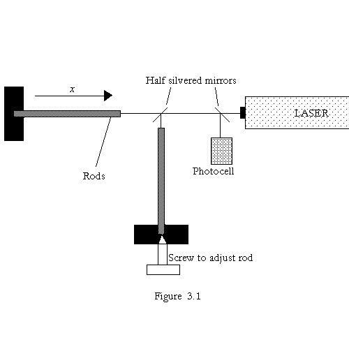
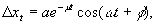
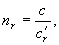
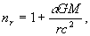
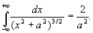

This part is concerned with the difficulties of detecting gravitational waves generated by astronomical events. It should be realised that the explosion of a distant supernova may produce fluctuations in the gravitational field strength at the surface of the Earth of about 10-19 N kg-1.A model for a gravitational wave detector (see figure 3.1) consists of two metal rods each 1m long, held at right angles to each other. One end of each rod is polished optically flat and the other end is held rigidly. The position of one rod is adjusted so there is a minimum signal received from the photocell (see figure 3.1).

The rods are given a short sharp longitudinal impulse by a piezoelectric device. As a result the free ends of the rods oscillate with a longitudinal displacement Dxt, where

and a, m, w and f are constants.
(a) If the amplitude of the motion is reduced by 20% during a 50s interval determine a value for m.
(b) Given that longitudinal wave velocity,v = Ö(E/r), determine also the lowest value for w, given that the rods are made of aluminium with a density (r ) of 2700 kg.m-3 and a Young modulus (E ) of 7.1 x 1010 Pa.
(c) It is impossible to make the rods exactly the same length so the photocell signal has a beat frequency of 0.005 Hz. What is the difference in length of the rods?
(d) For the rod of length l, derive an algebraic expression for the change in length, Dl, due to a change, Dg, in the gravitational field strength, g, in terms of l and other constants of the rod material. The response of the detector to this change takes place in the direction of one of the rods.
(e) The light produced by the laser is monochromatic with a wavelength of 656nm. If the minimum fringe shift that can be detected is 10-4 of the wavelength of the laser, what is the minimum value of l necessary if such a system were to be capable of detecting variations in g of 10-19 N kg-1?
Part B
This part is concerned with the effect of a gravitational field on the propagation of light in space.
(a) A photon emitted from the surface of the Sun (mass M, radius R) is red-shifted. By assuming a rest-mass equivalent for the photon energy, apply Newtonian gravitational theory to show that the effective (or measured) frequency of the photon at infinity is reduced (red-shifted) by the factor (1 - GM/Rc2).
(b) A reduction of the photon’s frequency is equivalent to an increase in its time period, or, using the photon as a standard clock, a dilation of time. In addition, it may be shown that a time dilation is always accompanied by a contraction in the unit of length by the same factor.
We will now try to study the effect that this has on the propagation of light near the Sun. Let us first define an effective refractive index nr at a point r from the centre of the Sun. Let

where c is the speed of light as measured by a co-ordinate system far away from the Sun’s gravitational influence (r ® ¥), and cr¢ is the speed of light as measured by a co-ordinate system at a distance r from the centre of the Sun.
Show that nr may be approximated to:

for small GM/rc2, where a is a constant that you determine.
(c) Using this expression for nr, calculate in radians the deflection of a light ray from its straight path as it passes the edge of the Sun.
Data:
Gravitational constant, G = 6.67 ´ 10-11 N m2 kg-2.
Mass of Sun, M = 1.99 ´ 1030 kg.
Radius of Sun, R = 6.95 ´ 108 m.
Velocity of light, c = 3.00 ´ 108 m s-1.
You may also need the following integral 
: